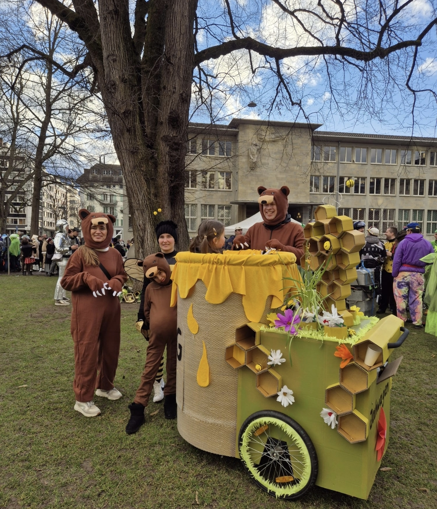
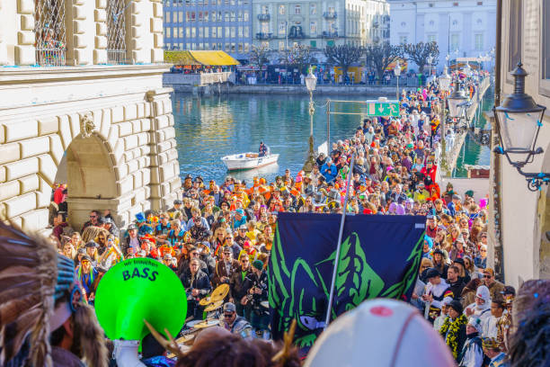
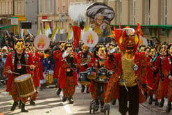

¡Lucerna despierta entre música y disfraces! Comienza el Fasnacht
Fecha: 1 de febrero de 2026
Tipo: Cultura y Tradición
Concejalía: Festejos y Turismo
Responsable: Géraldine Sauthier (Concejala de Cultura)
A las cinco de la mañana, un gran estruendo en la Kapellplatz ha marcado el inicio oficial de los días más alegres del año en Lucerna. Miles de ciudadanos, protegidos por sus elaboradas máscaras artesanales, se han reunido bajo el frío invierno para dar la bienvenida al Hermano Fritschi.
Las famosas bandas de Guggenmusik han comenzado a recorrer los callejones del casco antiguo, inundando la ciudad con sus ritmos metálicos y disonantes. La atmósfera de celebración se extenderá durante casi una semana, culminando en los espectaculares desfiles a orillas del lago.


